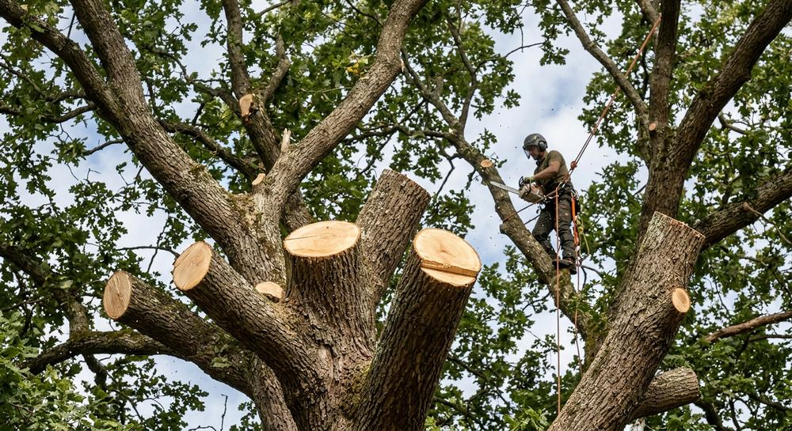
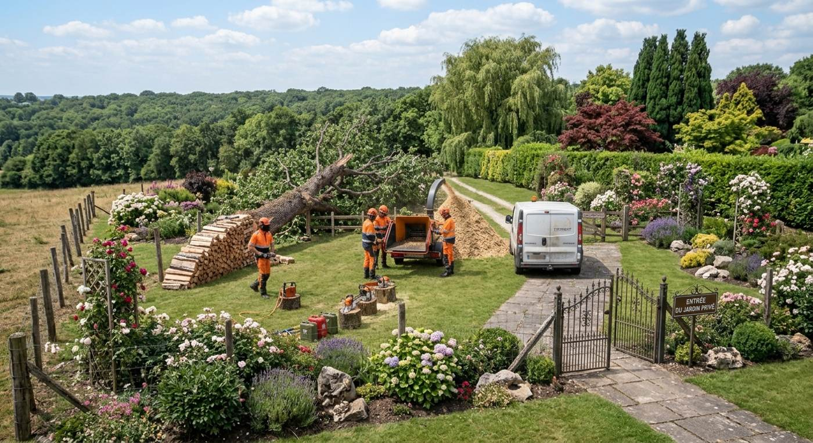
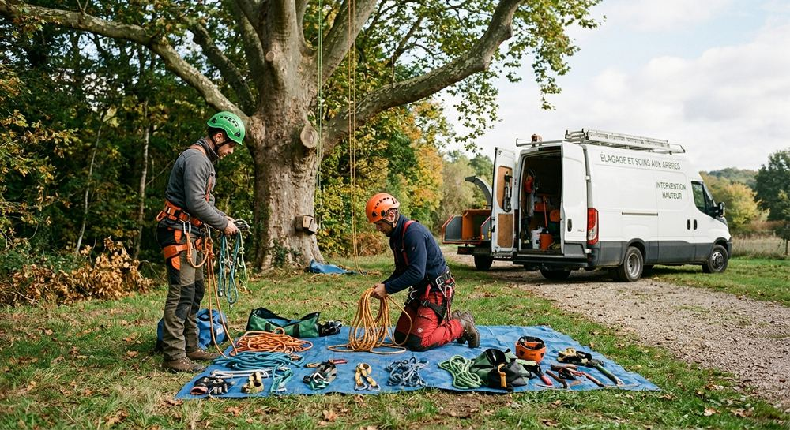
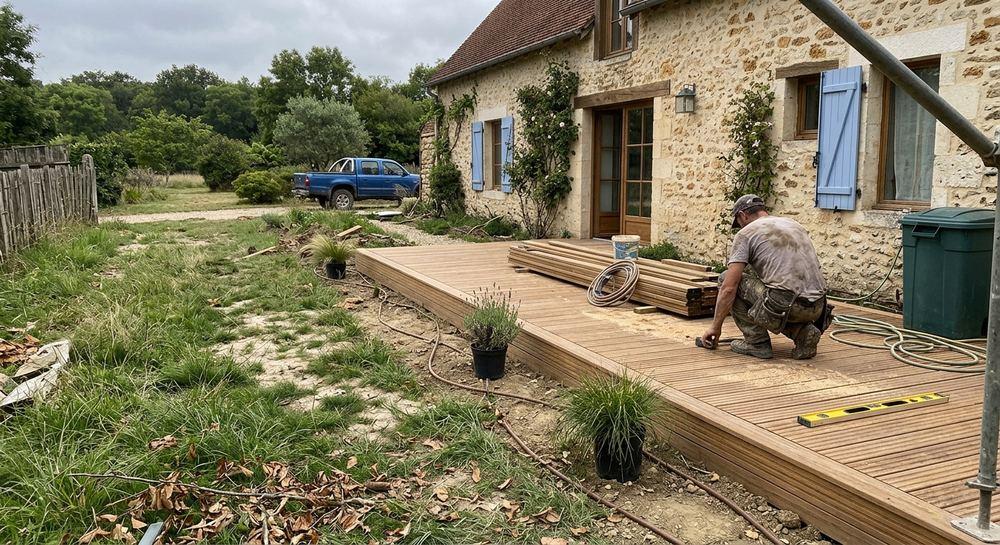

Arbres & taille
Taille, élagage et travail sur les arbres de votre propriété.

Arbirisculpture N.L. conçoit et entretient vos espaces verts au Vésinet (78) : un interlocuteur de terrain, un devis clair, un jardin qui vous ressemble.

Arbirisculpture N.L. est une société d'aménagement paysager immatriculée le 5 janvier 2004, avec son siège rue du Maréchal Foch, au Vésinet. Du travail de l'arbre à celui de la pierre et du végétal, chaque chantier part de votre jardin et de vos usages.
De l'arbre à la pelouse, quatre grands domaines de l'aménagement paysager. Parlons de votre projet pour définir précisément le besoin.

Taille, élagage et travail sur les arbres de votre propriété.

Terrasses, allées et cheminements pour mieux vivre dehors.

Murets, escaliers et soutènements en matériaux naturels.

Pelouse, massifs et entretien régulier pour un jardin toujours soigné.
Vous nous appelez et nous cernons votre besoin.
Une proposition claire, avant toute intervention.
Le chantier est mené jusqu'à la remise en état du site.
Entretien régulier possible pour garder un jardin soigné.
Appelez-nous ou laissez vos coordonnées : nous vous recontactons pour préciser votre besoin et vous proposer un devis.